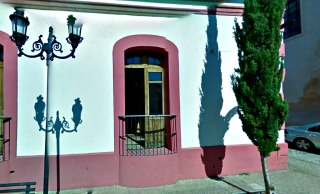
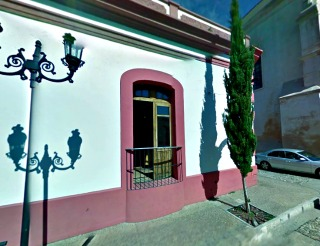
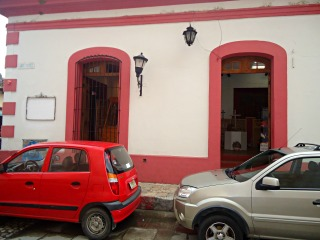
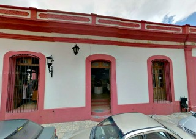
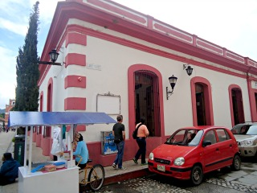

La casa de las artesanías es el lugar donde los artesanos chiapanecos muestran su esfuerzo para poder mantener vivas las costumbres y dar a conocer todo su arte por medio de productos que representan historia, conocimientos y costumbres y así poder mejorar su condición de vida.
Los productos que se pueden encontrar en este lugar son:
Alfarería, Ámbar, Cestería, Juguetería, Lapidaria, Metalistería, Talla en Madera, Talabartería, Textil, Comestibles.
Se encuentra ubicado en la avenida miguel hidalgo y esquina con calle niños heroes
Si usted se encuentra ubicado en el arco del carmen puede caminar una cuadra derecho hacia donde comienza el andador y en la primer esquina a su izquierda encontrará la casa de las artesanias frente al auditorio de la escuela de derecho.
En el lugar usted puede realizar actividades como:
* Compra de Artesanias





posicione el mouse sobre las imágenes